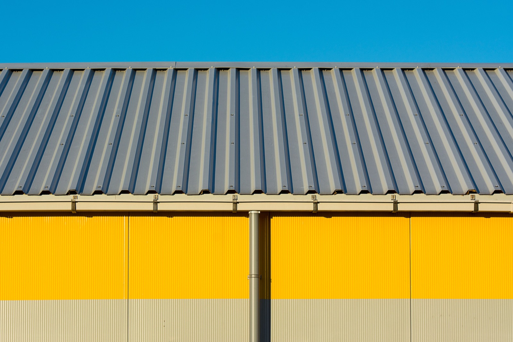

Tin & Corrugated Metal Roofs
The affordable workhorse of Latin American roofs — cheap, fast, and it sheds rain beautifully. Done right it's a genuinely good tropical roof; done cheap, it's hot and rust-prone. The honest take.

"Tin roof" is really corrugated or ribbed metal sheet — galvanized steel or zinc-aluminum, screwed to purlins in wavy or trapezoidal profiles. It's the most common roof in Latin America for three good reasons: it's cheap, it goes up fast, and it sheds tropical rain effortlessly. The catch is that a bare metal sheet with no insulation is an oven and a drum, and cheap coatings rust near the coast. Spec it properly and it's a genuinely good tropical roof; spec it cheaply and you'll feel every degree and hear every raindrop.
How it's built
Corrugated or trapezoidal metal sheets are fastened with exposed screws (fitted with neoprene washers) to timber or steel purlins, overlapped at the sides and ends to shed water. The two make-or-break upgrades over the bare-minimum version are insulation (a foil/foam layer or an insulated 'sandwich' panel to stop heat and condensation) and a quality coating (Galvalume or a coastal-grade paint system to fight rust). Fastening pattern and overlap detailing decide how it holds up in wind.
What does it cost?
This is the $ option: roughly $25–60/m² ($2.50–5.50/sq ft) installed for a basic corrugated roof, a fraction of standing seam or tile. Insulated panel systems cost more but are still affordable and transform comfort. The low price and speed are exactly why it dominates the region. (Approximate; profile, gauge, and coating drive the range.)
The trade-offs at a glance
| Factor | Rating | Notes |
|---|---|---|
| Cost | 🟢 | The cheapest durable roof — fast too |
| Lifespan | 🟡 | 15–40 years depending on coating/coastal exposure |
| Water shedding | 🟢 | Sheds heavy rain effortlessly |
| Heat/UV | 🔴 | Bare sheet radiates heat in — insulation is essential |
| Noise | 🔴 | Loud in rain unless insulated/decked |
| Salt/rust | 🔴 | Cheap coatings rust near the coast — spec Galvalume/aluminum |
| Hurricane/wind | 🟡 | Exposed screws can loosen; good fastening matters |
| DIY-friendly | 🟡 | Simpler than most roofs, but wind detailing needs care |
| Permitting/finance | 🟢 | Standard across the region |
Buildability — how hard is it to actually build?
Corrugated metal is one of the simplest roofs to install, which is half its appeal — small crews put it up fast, and materials are everywhere in Panama and Costa Rica. The skill isn't in laying sheets; it's in the three things cheap installs skip: insulation (or you bake), a corrosion-appropriate coating for your distance from the sea, and a wind-rated fastening pattern with proper overlaps (or storms find the edges). Get those right and a corrugated roof is a smart, affordable tropical choice; ignore them and it's the roof people complain about.
Planning a roof for a home in Panama or Costa Rica?
SORA is a fixed-price design-build platform for foreign buyers. We spec roofs for the tropics by default — heat, driving rain, salt air, and hurricane wind — and can walk you through the right material for your site and budget. See how the roof fits the whole build cost.
See real 2026 build costs →Frequently asked questions
Is a tin/corrugated roof good for a hot climate?
It can be, but only if insulated. Bare corrugated metal radiates absorbed heat straight into the house. Add a foil/foam insulation layer or use insulated sandwich panels and it performs well; skip insulation to save money and the interior will be uncomfortably hot.
How long does a corrugated metal roof last?
Typically 15–40 years, depending heavily on the coating and how close you are to salt air. A basic galvanized sheet near the coast rusts sooner; a Galvalume or aluminum sheet with a good paint system inland lasts much longer.
Is a tin roof noisy when it rains?
A bare corrugated roof over open purlins is loud — that's the classic 'drumming.' Installed over a deck with insulation, the noise drops dramatically. The noise is a construction choice, not an unavoidable feature.
Sources & verification
Figures in this guide were checked against primary and authoritative sources on 27 July 2026. Immigration, tax, and cost figures change — always confirm the current rules with the official body or a licensed professional before acting.
- Bob Vila — corrugated metal roofing overview
- Forbes Home — metal roof types & costs